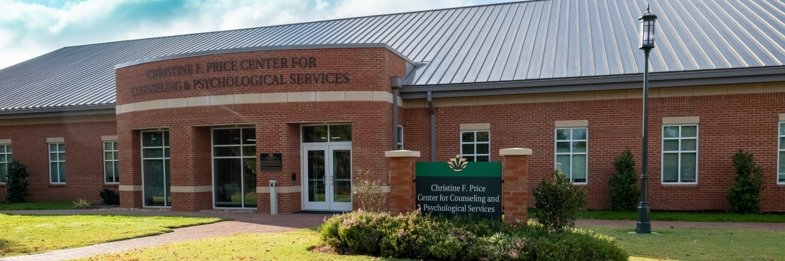

Counseling Services for UNC Charlotte Students and Faculty
There are several available services for UNC Charlotte students and faculty. Most of these services are directed through an on-campus organization called CAPS.
What is CAPS?
The Center for Counseling at Psychological Services (CAPS) is a department within the Division of Student Affairs
at UNC Charlotte. CAPS, along with the Student Health Center, the Center for Wellness Promotion, and University
Recreation, is a component of Health and Wellbeing, an administrative unit whose primary goal is to provide comprehensive
wellness-related programs and services to UNC Charlotte students.
The UNC Charlotte Center for Counseling and Psychological Services provides individual, couples, and group counseling
services, consultation, outreach, and psychiatric services to support UNC Charlotte students.
The services that CAPS offers to students are free of charge and there are an unlimited number of group sessions available
for students to access. Although the number of one-on-one sessions is limited to a certain number per year, CAPS also
offers recommendations for services outside of UNC Charlotte for students who may need them.